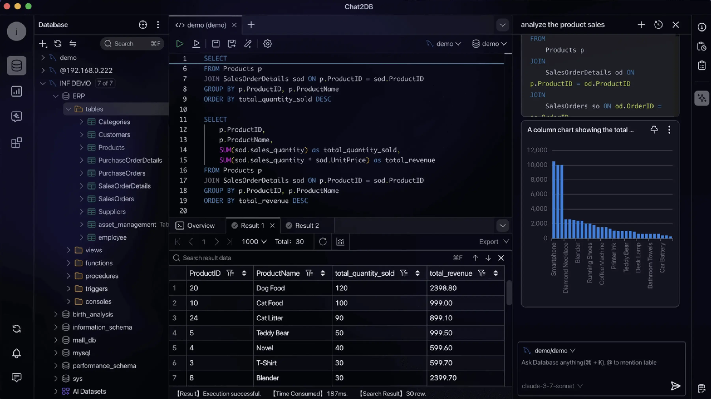

数据库
真正存放订单、商品、客户等记录。查询的最终答案由其中的数据计算出来。
数据放在哪里001 / CHAT2DB / 核心原理
Chat2DB 连接真实数据库，把表结构交给你配置的 AI 模型，再由模型推断该用哪些字段和条件。决定准确率的关键，是这些字段有没有写清业务含义。
看能力总图 直接看关联过程这是研究讲解页。下方订单均为编造的教学数据，不连接 Chat2DB 或真实数据库。

一张图看全局
先从左到右看三种入口，再看中间的 AI 与数据库两条链路；最下方说明复杂业务口径如何进入，以及最终得到什么。点击图可打开原始矢量图放大查看。
先分清角色
真正存放订单、商品、客户等记录。查询的最终答案由其中的数据计算出来。
数据放在哪里连接数据库，展示表结构，发送查询语句，显示查询结果，也能管理和编辑数据。
如何查看与操作听懂自然语言问题，参考表结构起草 SQL，或解释、改进已有 SQL。它需要人核对。
谁帮你写查询核心架构 · 源码核对
先确定当前数据源，再读取真实表结构；模型结合问题和可用描述推断 SQL。生成 SQL 与执行查询是两步。
模拟订单表 · orders
这些描述解释了字段，却还没定义“有效订单金额”的统计规则。
固定教学示例 · 不调用模型
当前：只有数据库字段说明
模型能看到这些字段存在，但无法唯一确定三件事：
如果仍要求生成 SQL，模型只能作假设；SQL 能运行也不能证明业务含义正确。
源码与产品文档的边界：已核对的 Community 源码支持读取元数据、工具调用和把请求中的业务上下文交给模型。官方文档另介绍“AI 数据集”，可给表和字段补写 AI 名称与注释；当前 Community 版本是否完整提供该界面，仍待实测。查看完整架构与源码证据 ↗
模拟演示 · 无真实连接
选择问题后，依次点击“AI 起草 SQL”和“模拟运行”。你能看到 AI 写语句与数据库返回结果是两个步骤。
点击下方按钮，查看这个问题对应的示例 SQL。请选择问题，随后查看 SQL 草稿。
为什么要看 SQL？能运行不等于答对问题。例如“卖得最多”可能指订单数、件数或金额；这里的问题明确指定“按金额”。退款和销售额还涉及跨表与时间口径，看一个更复杂的例子 ↓
进阶例子 · 退款与销售额
以下金额和表名都是教学假设。它展示的是业务口径如何改变查询，不是 Chat2DB 的真实计算结果。
口径 A · 按资金发生月
8 月发生的成功收款，减去 8 月完成的成功退款。退款原订单属于哪个月，不影响本月退款归属。
口径 B · 按支付订单月
先找到 8 月支付的订单，再扣除这些订单截至约定日期发生的退款；这里包括 9 月的 100 元退款。
它能向模型提供 payments 和 refunds 的表结构、字段注释与关联线索；请求还可附带业务说明。模型据此生成 SQL。要选择 A 还是 B，必须先明确业务定义；直接连接一笔支付与多笔退款后相加，还可能把支付金额重复计算。
产品文档中的 AI 数据集可以补写表和字段说明。已核对的 Community 路径没有显示由系统强制执行的“净销售额”指标公式与口径校验。查看示意 SQL、架构和证据 ↗
能力全景
连接多种数据库，查看表、字段、视图等结构。
编辑、补全、格式化、执行并保存 SQL。
用自选模型生成、解释、优化查询语句。
编辑数据、管理数据库对象、导入和导出。
查看结果、图表、仪表盘和 ER 图。
借助 CLI 与 MCP 将数据库能力接入其他工具。
能力依据：官方仓库 README。本页只模拟查询流程，未实测这些产品功能。